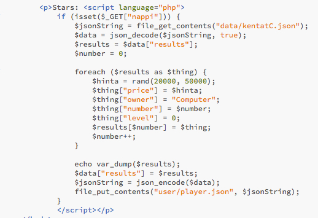
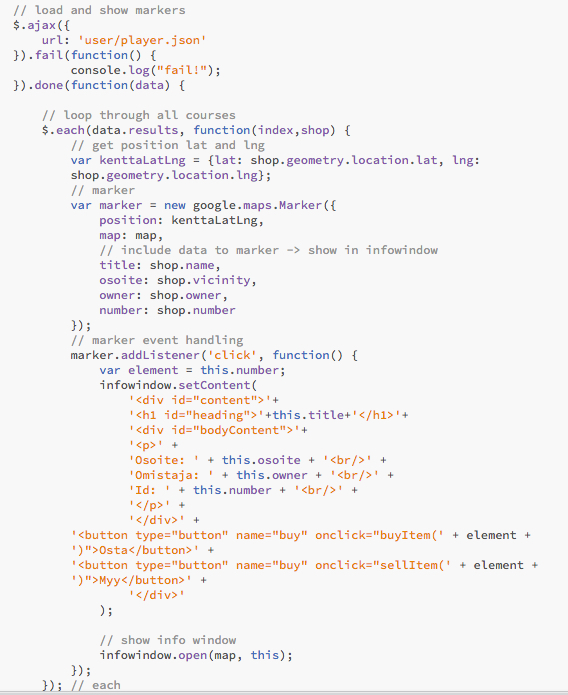
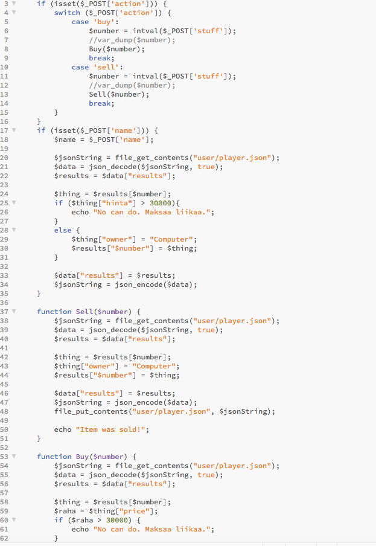
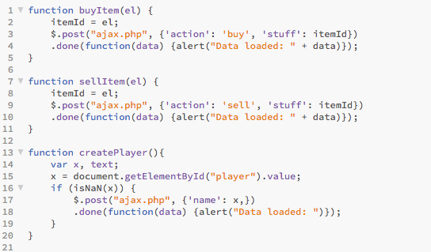
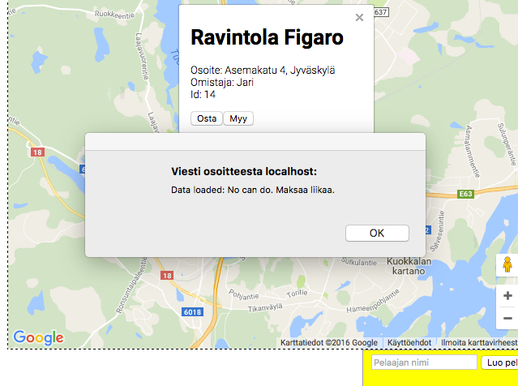
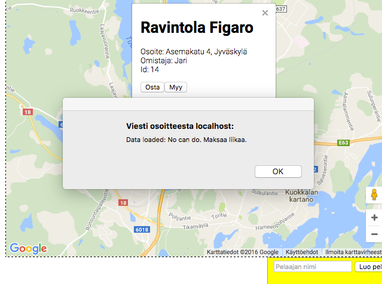

Web- ja webpalvelinohjelmoinnin harjoitustyö
Tästä pääsee peliinTekijät: Jari Loippo ja Matti Schroderus
Tavoite
Tavoitteena on luoda webselaimessa toimiva peli, jonka tavoitteena on ostaa ja myydä asuntoja tienataksesi rahaa. Peli on suunniteltu siten että pelaaja progressio, eli omistetut talot ja rahat, tallentuu json tiedostoon palvelinpuolelle.
Työn selostus
Pelin kartta luodaan samalla tavalla kuin kurssin golfkenttä tehtävässä. Mutta nyt kentät haetaan meidän omasta json tiedostosta joka haettiin googlelta.
Tähän tiedostoon lisätään hinnat, omistaja ja muita tietoja PHP skriptillä ja tallennetaan player.json tiedostoon. Tähän tarvittavat skriptit löytyy test.html tiedostosta. Näitä ei lisätty ajax.php tiedostoon, koska emme luultavasti ehdi lisätä tähän muita pelaajia.

js/siwu.js tiedosto luo ajaxin avulla karttaan markkerit ja listenerit. Kuten golfkentät esimerkissä, kun markkereita näpäytetään niistä tulee ikkuna jossa näkyy paikan nimi, omistaja, id:n ja pari nappia. Näitä painamalla siirrytään javascriptiin funktioon joka kutsuu uuden jQuery post funktion joka lähettää paikan id:n ja myynti tai osto käskyn serverille.

Serveripuolella PHP lukee if lausekkeilla annetun käskyn ja suorittaa sen määräämän skriptin. PHP käyttää file_get/put_contents funktiota ladatakseen player.json tiedoston arrayhyn. Arrayta muokataan lisäämällä uusi omistaja tai korottamalla asunnon tasoa. Kun serveri on saanut täällä tehtyä hommansa se voisi lähettää takaisin ajaxille viestin että se voi päivittää karttansa. En vielä tosin keksinyt miten implementoida tuota, joten pelaajan täytyy päivittää sivu jotta muutokset tulevat näkyviin.

Työ jakautui kahtia jossa Matti keskittyi selinpuolen ohjelmointiin ja Jari Keskittyi palvelinpuolen ohjelmointiin.

 
